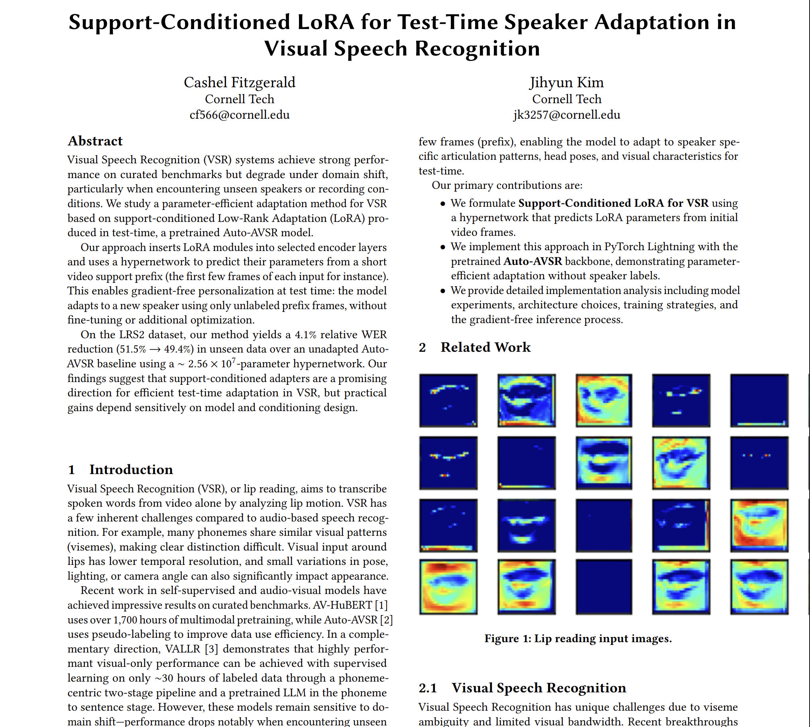
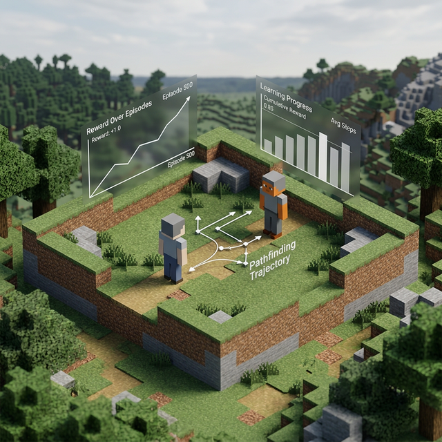
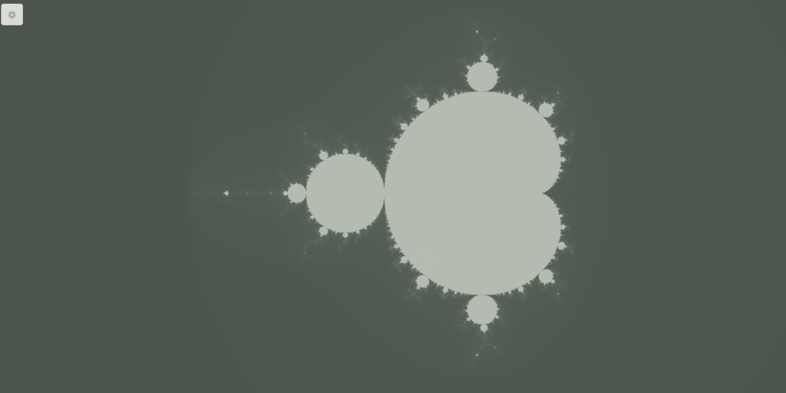
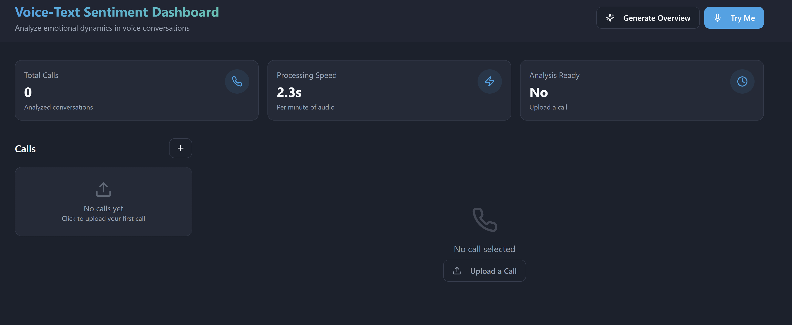

ENGINEER & FOUNDER
Cashel
Fitzgerald.
Co-founder & CTO at Zomma .
Building computer-use agents for the financial back office.

Building useful machine learning systems.
Cashel Fitzgerald is the co-founder and CTO of Zomma, where he builds computer-use agents for financial operations. Based in San Francisco, he works on machine learning systems that connect models with real software and workflows.
My background includes Cornell CS, UT Austin ECE, and work at Modern Intelligence. My projects explore reinforcement learning, visual speech recognition, and diffusion language models.
More about Cashel Fitzgerald01 / LIVE DIFFUSION
Marvin’s brain.
Marvin is my interactive diffusion language model demo. Follow real token states and measured hidden activations as a Qwen3 0.6B model generates a response.
The interactive model loads with JavaScript.
Read about the architecture, measurements, and limitations →02 / SELECTED WORK
A few things I’ve made.

Speaker adaptation
Research · Computer visionAdapting lip-reading models to new speakers from a few video frames, without gradient updates.

Minecraft RL
Reinforcement learningTraining a combat policy in Minecraft, with a custom environment and a scripted opponent.

Mandelbrot
Interactive · WebGLA fractal explorer. Zoom in; there’s always more to see.

Tone Track
Machine learning · AudioTracking emotion in speech over time with transformer models.